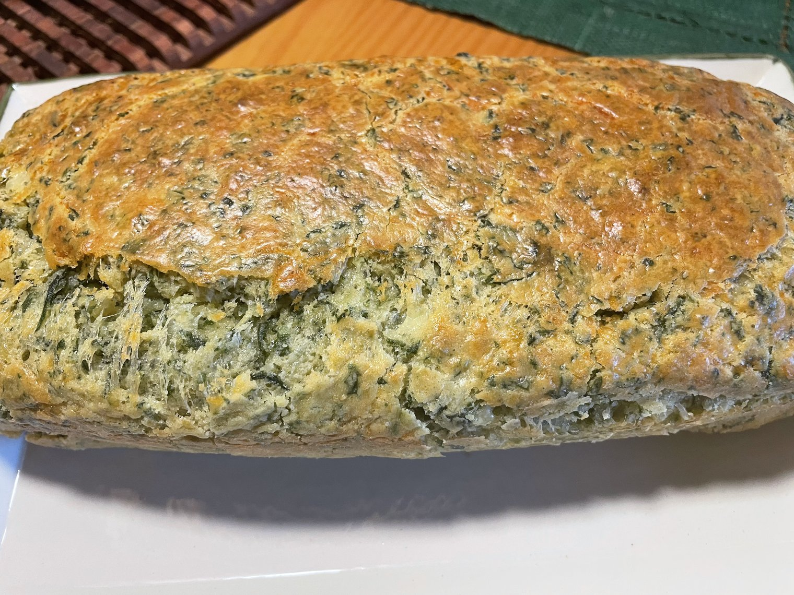

Cake de espelta, espinacas y gruyère
Ingredients
6×
- 200 g de espinacas
- 3 huevos
- 100 ml de leche
- 80 ml de aceite de oliva
- 180 g de harina de espelta
- 1 sobre de levadura química
- sal
- pimienta
- 120 g de gruyère rallado

Preparación
Paso 1
Saltear 200 g de espinacas hasta que pierdan el agua, escurrir y picar.
Paso 2
Batir 3 huevos con 100 ml de leche y 80 ml de aceite de oliva. Añadir 180 g de harina de espelta, 1 sobre de levadura química, sal y pimienta.
Paso 3
Incorporar las espinacas y 120 g de gruyère rallado.
Paso 4
Verter en un molde de cake engrasado y hornear 45min a 180ºC, hasta que al pinchar salga limpio.